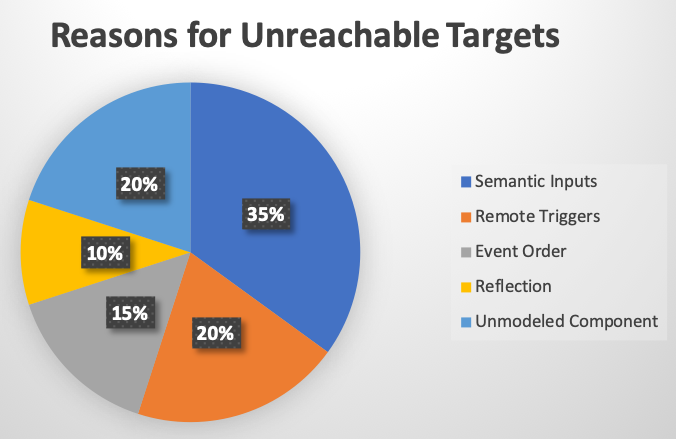

Accuracy Evaluation
The accuracy evaluation set is used as the ground truth to analyze all reachable targets in these apps. This set is a subset of the benchmark apps, consisting 36 open-source apps from the benchmark which are also available on Google Play. The selection of this subset ensures that we arrive at a representative and practically valuable subset.
This page presents:
- list of apps: the list of apps that we used to evaluate the accuracy of GoalExplorer.
- reasons for unreachable targets: the main reasons preventing GoalExplorer from reaching these targets.
List of apps
| Package Name | Version | Size(KB) |
|---|---|---|
| org.jessies.dalvikexplorer | 3.9 | 0.248046875 |
| jpf.android.diary | 1 | 0.022460938 |
| de.homac.Mirrored | 0.2.3 | 0.049804688 |
| com.kvance.Nectroid | 1.2.4 | 0.278320313 |
| org.wordpress.android | 2.0 Alpha | 1.444335938 |
| a2dp.Vol | 2.11.12 | 0.5234375 |
| aarddict.android | 1.6.11 | 1.827148438 |
| com.addi | 1.98 | 20.59277344 |
| com.angrydoughnuts.android.alarmclock | 1.9 | 0.322265625 |
| eu.domob.angulo | 2131099649 | 0.1875 |
| org.liberty.android.fantastischmemo | 2131230964 | 0.9453125 |
| ch.blinkenlights.battery | 2130968576 | 1.296875 |
| net.sf.andbatdog.batterydog | 0.1.1 | 0.168945313 |
| jp.sblo.pandora.aGrep | 0.2.1 | 0.274414063 |
| com.templaro.opsiz.aka | 1 | 0.23046875 |
| com.evancharlton.mileage | 3.1.1 | 0.529296875 |
| org.passwordmaker.android | 1.1.7 | 0.124023438 |
| de.zieren.rot13 | 1.0.2 | 0.171875 |
| marto.rtl_tcp_andro | 2.2 | 0.408203125 |
| net.mandaria.tippytipper | 1.1.3 | 0.135742188 |
| de.freewarepoint.whohasmystuff | 1.0.7 | 0.075195313 |
| org.wikipedia | 1.2.1 | 1.356445313 |
| com.irahul.worldclock | 0.6 | 1.100585938 |
| org.scoutant.blokish | 0.5.1 | 0.44140625 |
| com.github.cetoolbox | 1 | 0.193359375 |
| org.balau.fakedawn | 1.3 | 0.223632813 |
| org.jfedor.frozenbubble | 1.12 | 0.63671875 |
| com.twsitedapps.homemanager | 2131099649 | 0.274414063 |
| com.fsck.k9 | 3.512 | 2.630859375 |
| com.sunyata.kindmind | 1.0.0_BETA | 0.422851563 |
| in.shick.lockpatterngenerator | 2.2 | 0.278320313 |
| jp.gr.java_conf.hatalab.mnv | 0.4 | 0.317382813 |
| org.totschnig.myexpenses | 1.6.0 | 0.430664063 |
| org.swiftp | 1.25 | 0.0859375 |
| org.tomdroid | 0.7.5 | 1.0546875 |
| biz.gyrus.yaab | 1.10.1 | 0.37109375 |
Reasons for Unreachable Targets
